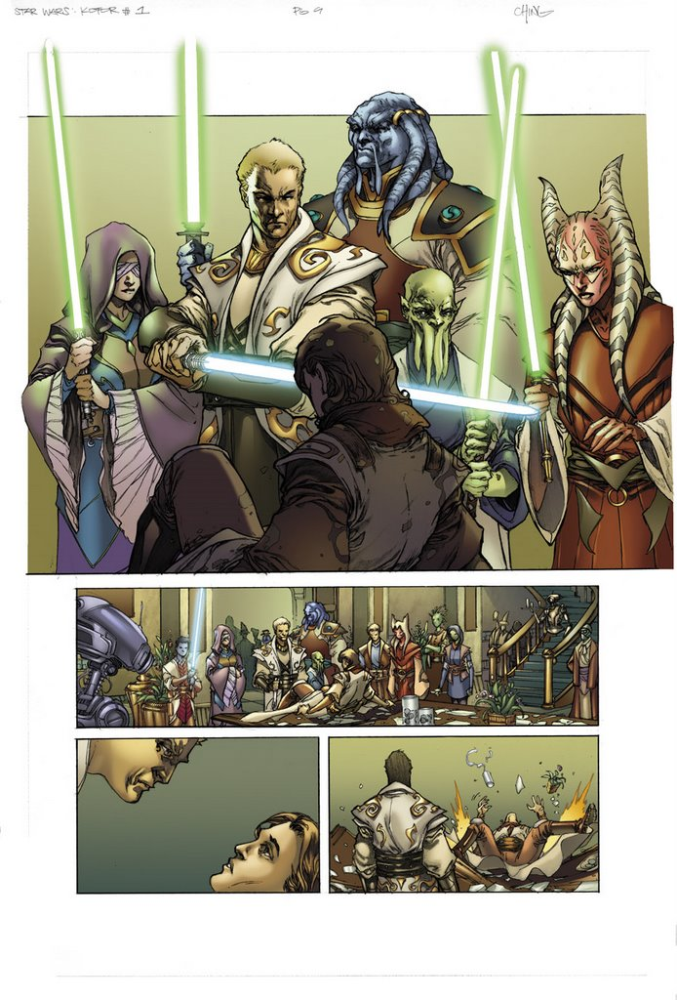
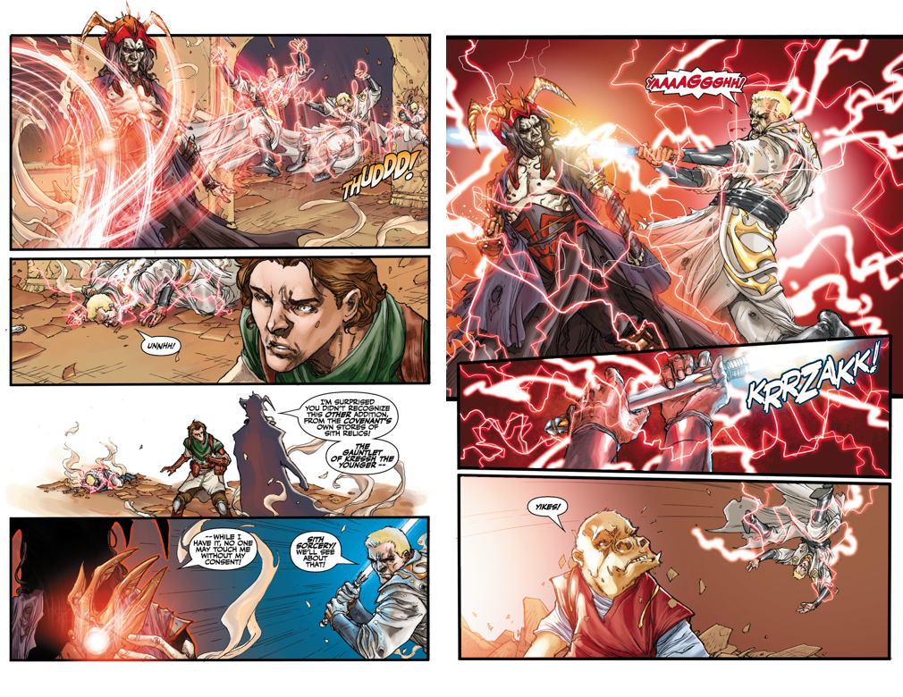
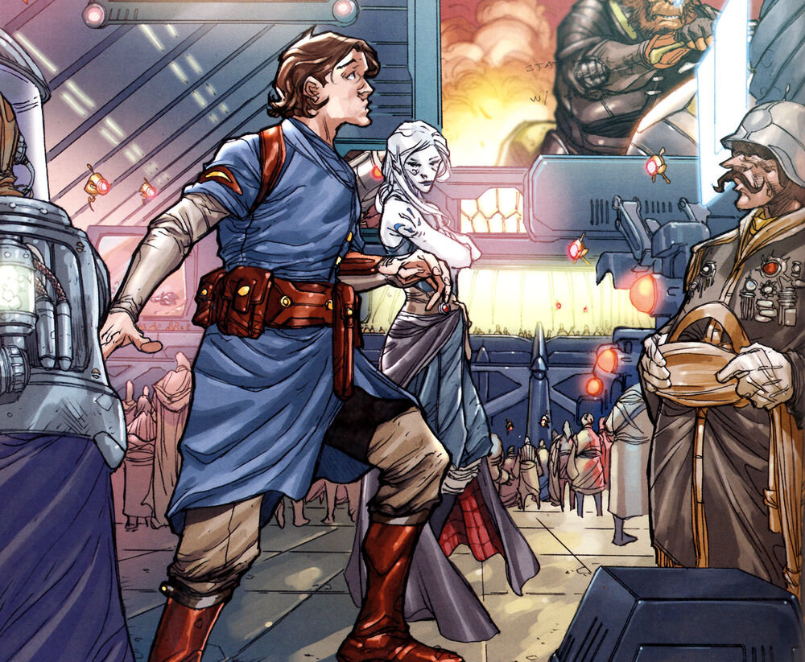
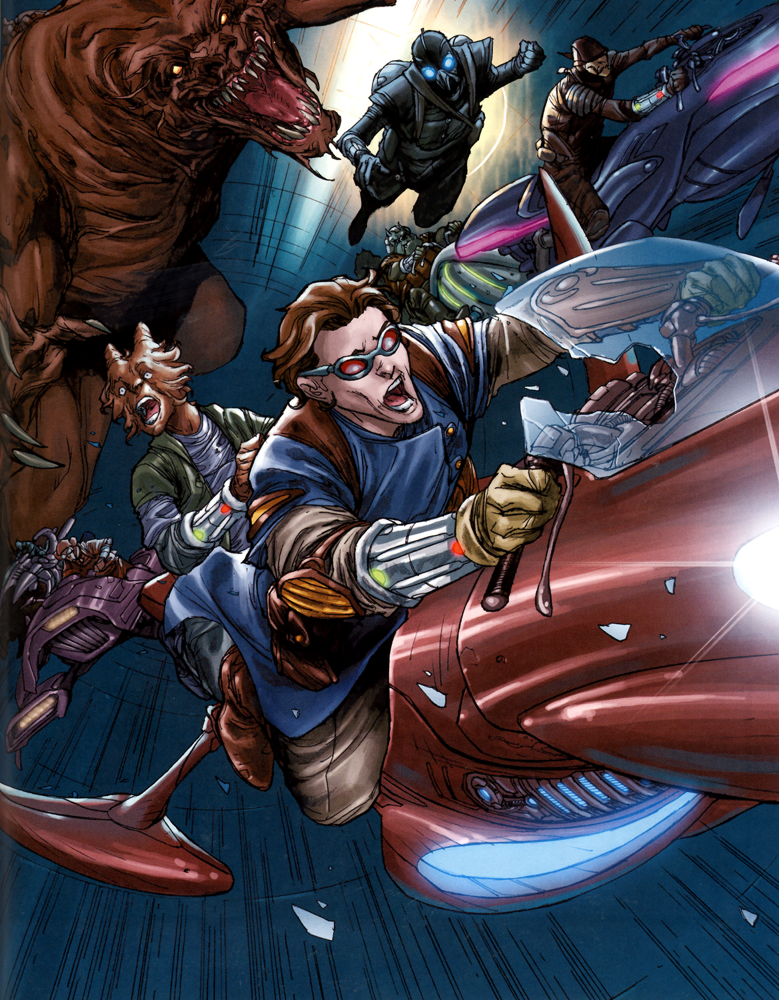
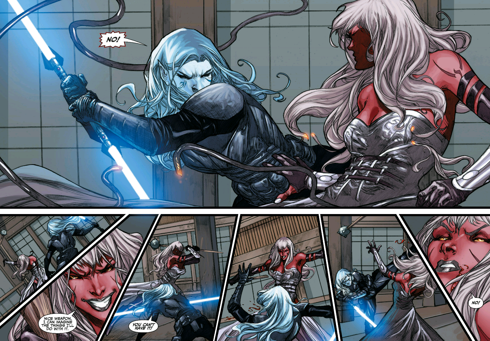

The Ever-changing styles of Brian Ching
"I live in Southern California where it's 90 degrees in the Summer and 70 degrees in the Winter and yet I still find ways to complain."
Home
About Me
Star Wars work:
Clone Wars
Kotor part:1
Kotor part:2
Forced Unleashed
Marvel work:
Hulk
DC work:
Supergirl
Over the 4 years Ching worked on the book, his style developed and changed. These images from certain issues of the series by him, with colors by Atiyeh, emphasize this change.





For more information about Brian Ching, follow him on Instagram or check out these websites:
His blog
His Deviant art page
Disclaimer: This site was created without the knowledge of the copyright holder and is purely for educational purposes. All artwork used here is copyright the original creator.